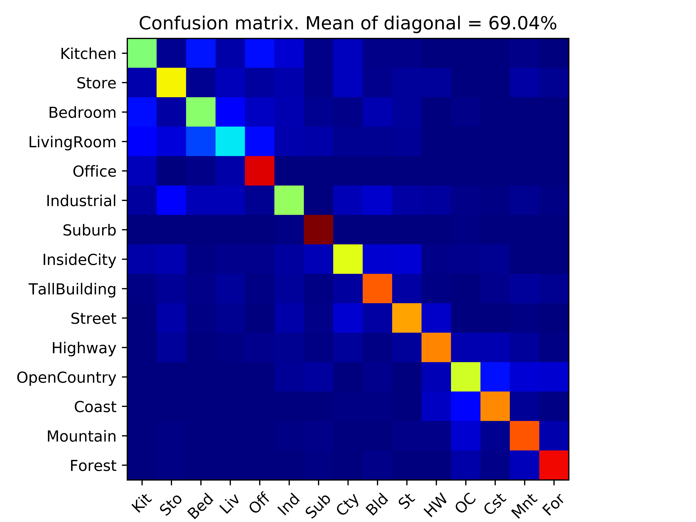

For this project we had to get accointed with the basics of supervised machine learning in the task of scene recognition. The project was divided into 3 steps, where each is step is built upon a previous one to show a better performance for the given task:
To get accointed with the basic idea of how scene recognition is made we resized the the testing and training images to be small enough to use the normalized pixel information as features for image identification and then by mapping test to train by closest L2 distance, choosing the test_labels for testing. This has produced expectedily low rate results, as on cross validation dummy sets of size 1500 (100 images per class), as on the whole sets of avaliable data: only 22.3% accuracy (Table 2, Column 1)
In order to get better performance, the previous scene recognition step could obviously be imporved by changing the types of features we take for categorising the datalist. For that exploring the clustering method was proposed. First, we had to build the vocabulary from training set (getting as amny distinct SIFT feaures from every class, as possible). The SIFT descriptor used could be changed by many parameters, but those taken to be estimated through cross validation were the step size and bin size. The step size of sift represented how far the image pixels used for feature centers should be taken from each other, and bin size, how many pixels around them to consider for it. More on what best parameters were estimated is talked about in the results section. Then, based on vocabulary results, descriptors for training and testing were defined. Descriptors were repsresented by sift bags, based on how many sift features have fallen with certain vocalb cluster centers. Here, the step size for sift features in sift bags and vocab sizes were main parameters dictating the performance. The less the step, taken, the better the performance was. Also the different the bigger vocab sizes produced worse results, when built with default hyperparameters. ALthough, twiking them a bit made a change in a better direction. So, as for vocabulary size: the smaller ones require smaller step and bin size, the middle sized, the bigger step and bigger bin size, the big ones need some playing around, yet slightly smaller step, than for mid sized ones produced better results. This could be explained by different data robustness for mid and big sized ones, , which could be less for mid sized ones, if looked at with small step, as well as data similarity, yet scarce size of it for smaller sized ones. Overall, the use of more pronounced features as descriptor has improved results significantly; almost 3 times better accuracy(Table 2, Column 2.)
In order to show even better accuracy for the last step the nearest neighbor classifier was replaced with SVM. For SVM different kernel types and parameters were played around with to find the best performance given the limited descriptor abilities (since only one type of descriptor was used). The linear svm has showed obviously better berformance than NN method, yet it was not superior to rbf, which is more flexible for every class not being linearly seperated from the others. Gamma and C (was estimated to = 2) parameters were taken from based on performance of cross validation and validation. Yet, since a small size of vocabulary was used for this experimentation, the estimated ones worked better with smaller vocab sizes, yet the bigger size of training in validation method has showed slightly different value for gamma (1 instead of 0.3), which has indeed worked better when using vocab of size 1000 and up.
In order to estimate hyper parameters the cross validation, where training and test data was randomly picked from all data, so that each class was represented by 100 samples (as alredy coded in utils.py), was used as well as validation, where training set was split 30/70, and the 30% window was moved, leaving the remaining set of 70%. On cross-validation each of the hyperparameters was scanned through with 5 for cycles, so all possible (6^5) combinations of them could be taken into account and the ones, producing the best results could be taken. Then the validation was used to scan through step size for sif bags, step and bin size for vocab, C and gamma would be scanned again within the small window of the best values provided by cross validation. Scan means and stds are reported in word file 'Cross Validation/Validation results (mean accuracies and stds)'. The vocab of size 50 was used for this testing. Lastly, the different vocab sizes were tried out and the peroformance is reported in Table 1 below. As you can see, in light of no additional descriptors and other improvements, the performance could be as high as 77% for some parameters combination, yet it is always within 70-74% and is not that much improved by vocab size after a certain size (vocab_size = 200).
|  |
1 Szeliski, R. (2011). Computer vision algorithms and applications. London: Springer.
2 James Hays, Computer Vision CS 6476 Fall 2018 slides